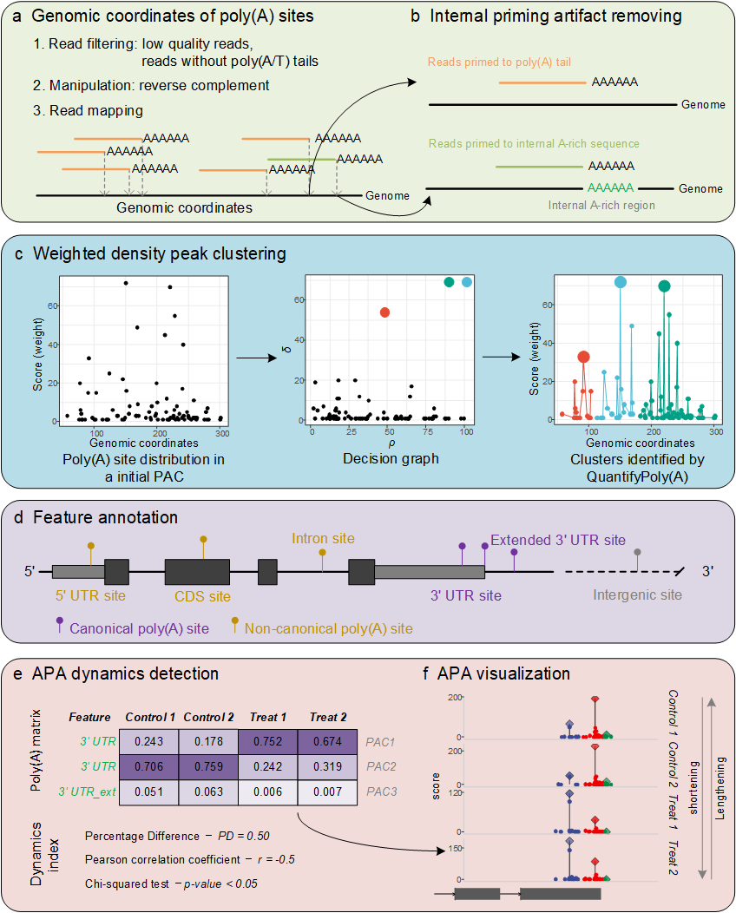

Quantification of poly(A) site usage from 3’ end sequencing data


The tool is called QuantifyPoly(A). It is distributed as the R package QuantifyPolyA, because R does not allow parentheses in package names, so the install commands, the function calls and the QuantifyPolyA class all spell the name without parentheses.
QuantifyPoly(A) is a complete and seamless R package for accurately quantifying poly(A) site usages under diverse biological conditions. It employs a weighted density peak clustering algorithm to address the innate microheterogeneity of cleavage and polyadenylation.

The schematic diagram of QuantifyPoly(A): (a) input preparation, (b) internal priming artifact removal, (c) poly(A) site clustering, (d) feature annotation, (e) APA dynamics detection, (f) APA visualization.
Installation
The package is not on CRAN. Install the development version from GitHub:
# install from GitHub (dependencies are resolved automatically)
if (!requireNamespace("remotes", quietly = TRUE)) install.packages("remotes")
remotes::install_github("yec-bioinfo/QuantifyPolyA")
# or with pak
# pak::pkg_install("yec-bioinfo/QuantifyPolyA")ggalt is distributed on GitHub rather than CRAN; the Remotes field in DESCRIPTION makes remotes/pak fetch it automatically. Bioconductor dependencies are available for R >= 4.0 via BiocManager.
To install from a local source tarball:
install.packages("QuantifyPolyA_0.4.0.tar.gz", repos = NULL, type = "source")Note that R does not install dependencies for a local tarball; use remotes::install_local("QuantifyPolyA_0.4.0.tar.gz", dependencies = TRUE) or install the dependencies listed in DESCRIPTION first.
Quick start
library(QuantifyPolyA)
#1. Load raw poly(A) site data (one file per sample)
QpolyA <- Load.PolyA(dir = "./Test")
#2. Remove internal priming artifacts
QpolyA <- Remove.IP(QpolyA, fasta = "Genome.fasta")
#3. Cluster poly(A) sites into PACs
QpolyA <- Cluster.PolyA(QpolyA, max.gapwidth = 24, mc.cores = 4)
#4. Annotate and quantify PACs
QpolyA <- Annotate.PolyA(QpolyA, gff = "Genome.annotation.gtf")
#5. Quantify APA dynamics between two conditions
colData <- data.frame(
condition = c(rep("Control",2), rep("Treatment",2)),
type = "single-end"
)
rownames(colData) <- QpolyA@sample_names
split.APA <- Quantify.SplitAPA(QpolyA, colData,
contrast = c("condition", "Control", "Treatment"))Documentation
The user manual is published as a web page, so no R installation is needed to read it:
- Online manual: https://yec-bioinfo.github.io/QuantifyPolyA/articles/QuantifyPolyA.html
- Function reference: https://yec-bioinfo.github.io/QuantifyPolyA/reference/
- Package home page: https://yec-bioinfo.github.io/QuantifyPolyA/
The same manual ships with the package as a vignette, and every function has its own help page:
vignette("QuantifyPolyA")
?Remove.IPThe manual for version 0.3.0 is still available on SourceForge: https://sourceforge.net/p/quantifypoly-a/wiki/User%20Manual/
Main functions
| Function | Purpose |
|---|---|
Load.PolyA() |
Load raw poly(A) site files |
Remove.IP() |
Remove internal priming artifacts |
Cluster.PolyA() |
Cluster sites into PACs (weighted density peak clustering) |
Annotate.PolyA() |
Annotate PACs and build the PAC matrix |
Filter.PolyA() |
Filter PACs with low read support |
Quantify.SplitAPA() |
APA dynamics among split PACs |
Quantify.CanonicalAPA() |
APA dynamics among 3’ UTR PACs |
Quantify.CNCAPA() |
Canonical vs. non-canonical PAC dynamics |
Quantify.GeneAPA() |
APA dynamics across a whole gene |
Visualize.PolyA() |
Plot poly(A) profiles of a gene |
DESeq2.PolyA() |
Differential PAC analysis with DESeq2 |
Input format
Raw poly(A) site files are tab-separated with four columns:
| Column | Explanation |
|---|---|
seqnames |
Chromosome or contig name |
strand |
+ or -
|
coord |
Genomic coordinate of the poly(A) site |
score |
Number of reads supporting the site |
Citation
Ye C, Zhao D, Ye W, Wu X, Ji G, Li QQ, Lin J (2021). QuantifyPoly(A): reshaping alternative polyadenylation landscapes of eukaryotes with weighted density peak clustering. Briefings in Bioinformatics. doi:10.1093/bib/bbab268
citation("QuantifyPolyA")Contact
Congting Ye yec@xmu.edu.cn
Please report bugs at https://github.com/yec-bioinfo/QuantifyPolyA/issues.